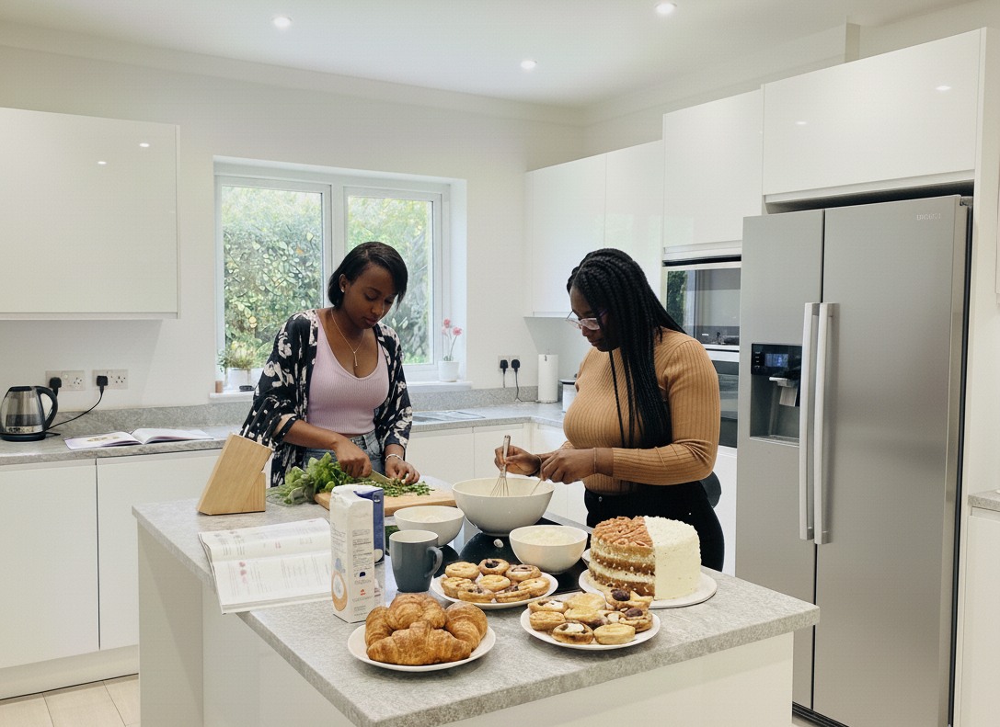

Des recettes élégantes, des saveurs authentiques et des inspirations venues du monde entier. Chaque assiette devient une œuvre.

Avant CulinArt, il y avait simplement deux filles : Imma et Dari. Deux personnalités différentes, mais unies par la même curiosité et la même sensibilité. Dès nos premières rencontres, nous avons découvert que quelque chose nous rapprochait profondément : l'amour de la cuisine.
Au début, c'était un jeu. Nous testions des recettes simples, parfois maladroites, mais toujours avec le sourire. Chaque essai était une aventure : parfois des ratés, souvent des réussites, mais surtout des souvenirs gravés dans nos cœurs.
De cette alchimie est né CulinArt — un espace où nous partageons plus qu'un savoir-faire. Nous partageons une histoire, un langage d'amour, de créativité et de passion.
— Imma & DariAvec le temps, cette passion s'est transformée en une véritable histoire d'amour culinaire. Nous avons exploré de nouvelles saveurs, voyagé à travers les plats, revisité les classiques de nos familles, et laissé libre cours à notre imagination.
Dans notre cuisine, il n'y avait pas seulement des ingrédients, mais aussi des rires, des confidences et beaucoup de tendresse.
Chez CulinArt, chaque recette raconte une histoire. Nos recettes sont conçues pour vous guider étape par étape, vous apprendre des techniques nouvelles, et surtout vous inviter à expérimenter avec les saveurs, les textures et les couleurs.
Laissez-vous emporter par notre univers culinaire où tradition et innovation se rencontrent. Explorez, goûtez, osez, et surtout amusez-vous !
Voir les recettes →Des méthodes professionnelles adaptées à tous les niveaux de cuisine.
Des recettes du monde entier, fidèles à leurs traditions d'origine.
Une touche personnelle sur chaque plat pour transformer l'ordinaire.
La cuisine comme langage universel, autour d'une table partagée.
Rejoignez notre univers et découvrez des centaines de recettes du monde entier.